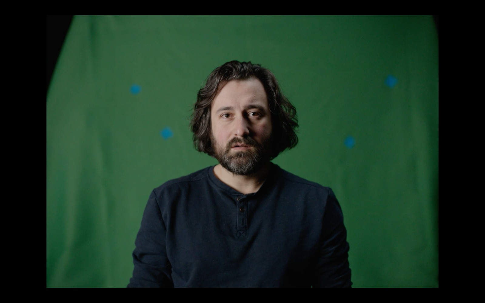
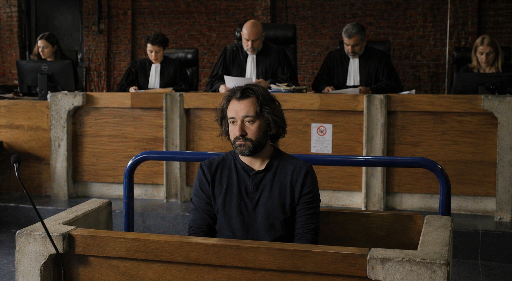
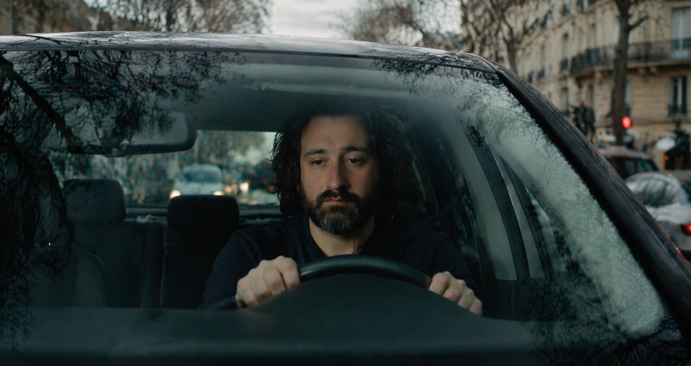

Challenge
Could camera movement, set transformation and continuity be validated before the shoot?
Could camera movement, set transformation and continuity be validated before the shoot?
Validated environments help align camera language, art direction, character continuity and VFX targets.
Clearer communication with VFX. Earlier art direction validation. Less back-and-forth in postproduction.

Framing, actor placement and camera movement are defined first.

The same character is tested inside a validated courtroom direction.

The character carries into a new environment with the same visual intention.
The director, cinematographer and VFX supervisor share a clearer reference before final execution.